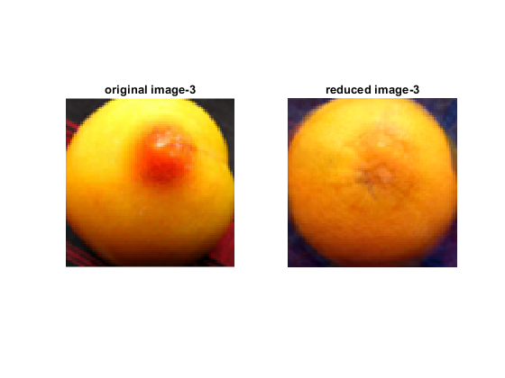
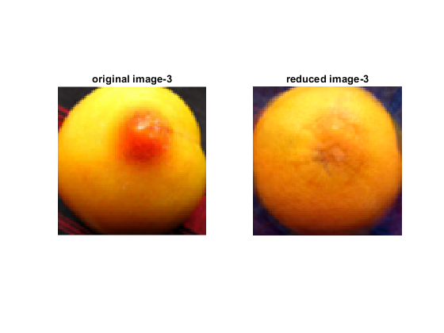

Contents
- Principle Component Analysis for a dataset of fruit images.
- Loading image data and creating basic elements:
- Ploting the mean and rescaled eigen vectors.
- Scree plot for the first 10 eigen vectors.
- Building the scores-matrix w.r.t. 4 principle components:
- Printing the original image and the dimension-reduced counterpart:
- Generating 3 random new images:
Principle Component Analysis for a dataset of fruit images.
The images of 16 fruits are stored in the ../data/fruits directory. The fruits.mat in the ../data dir contains the same images stored in a 16 x (80*80*3) array.
Loading image data and creating basic elements:
load("../data/fruits.mat");
num_eigV = 10;
mean_img = my_mean(M);
cov_img = my_cov(M);
[eig_vec, eig_value]= eigs(cov_img, num_eigV);
M - the data matrix, is loaded with type = double, range = 0-255.(Manipulated accordingly.)
mean_img is the mean vector of the images.
cov_img is the covariance matrix of 19200 quantities, present in each sample image.
eig_vec is a loading-matrix of size 19200 x num_eigV.
eig_value is a diagonal matrix with largest 10 eigen values of cov_img.
Ploting the mean and rescaled eigen vectors.
subplot(4,2,1:4), imshow(uint8((reshape(mean_img,80,80,3)))), title("mean vector"); subplot(4,2,5), imshow(rescale(double(reshape(eig_vec(:,1),80,80,3)))), title("Eigen vector 1"); subplot(4,2,6), imshow(rescale(double(reshape(eig_vec(:,2),80,80,3)))), title("Eigen vector 2"); subplot(4,2,7), imshow(rescale(double(reshape(eig_vec(:,3),80,80,3)))), title("Eigen vector 3"); subplot(4,2,8), imshow(rescale(double(reshape(eig_vec(:,4),80,80,3)))), title("Eigen vector 4");
Scree plot for the first 10 eigen vectors.
figure; plot([1:1:10], diag(eig_value)); xlabel("Eigen vector"); ylabel("Eigen Value"); title("Scree plot");
Building the scores-matrix w.r.t. 4 principle components:
img_num = 16; loadings = eig_vec(:,1:4); scores = (M-mean_img) * loadings;
the scores matrix is now w.r.t. the 4 base vectors.
Here, the eigen vector are orthonormal to each other. Hence, the point which minimises the Frobneius Norm is the Projection of the datum point onto the 4-D hyperplane spanned by these eigenVectors. Hence, the cordinates in the eigenVector basis is equal to the dot product of the datum and eigenVector. (And hence, we multiply loadings matrix (the eigenVector) and M-mean_img matrix (the Datum vector).)
Again multiply the scores- matrix with loadings-matrix of the 4 base vectors to get the original 19200-dimension representation. And then, add the mean vector to this.
M_new = (scores * loadings') + mean_img;
Now we have the data-matrix of the dimensionality-reduced images.
Printing the original image and the dimension-reduced counterpart:
for img_num = [1:1:16] figure; subplot (1,2,1), imshow(uint8((reshape(M(img_num,:),80,80,3)))), title("original image-"+img_num); subplot (1,2,2), imshow(uint8((reshape(M_new(img_num,:),80,80,3)))), title("reduced image-"+img_num); end
 
 Generating 3 random new images:
Here, we choose 3 random numbers between 1 and 1.5, and SAMPLE 3 datums, as shown below, by constructing their scores Matrix.
We again multiply this scores matrix with the loading matrix to obtain these datums in the 19200-Dimension notation.
M_gen is the data-matrix storing the 3 newly sampled datums.
rng(0.8); factor_rand = rand(3)*0.5 + 1; scores_gen(1,:) = factor_rand(1)*sum(scores(4 :6 ,:)); scores_gen(2,:) = factor_rand(2)*sum(scores(7 :10,:)); scores_gen(3,:) = factor_rand(3)*sum(scores(11:14,:)); M_gen = (scores_gen * loadings') + mean_img; figure; subplot(1,3,1), imshow(uint8((reshape(M_gen(1,:),80,80,3)))), title("Sample1"); subplot(1,3,2), imshow(uint8((reshape(M_gen(2,:),80,80,3)))), title("Sample2"); subplot(1,3,3), imshow(uint8((reshape(M_gen(3,:),80,80,3)))), title("Sample3");